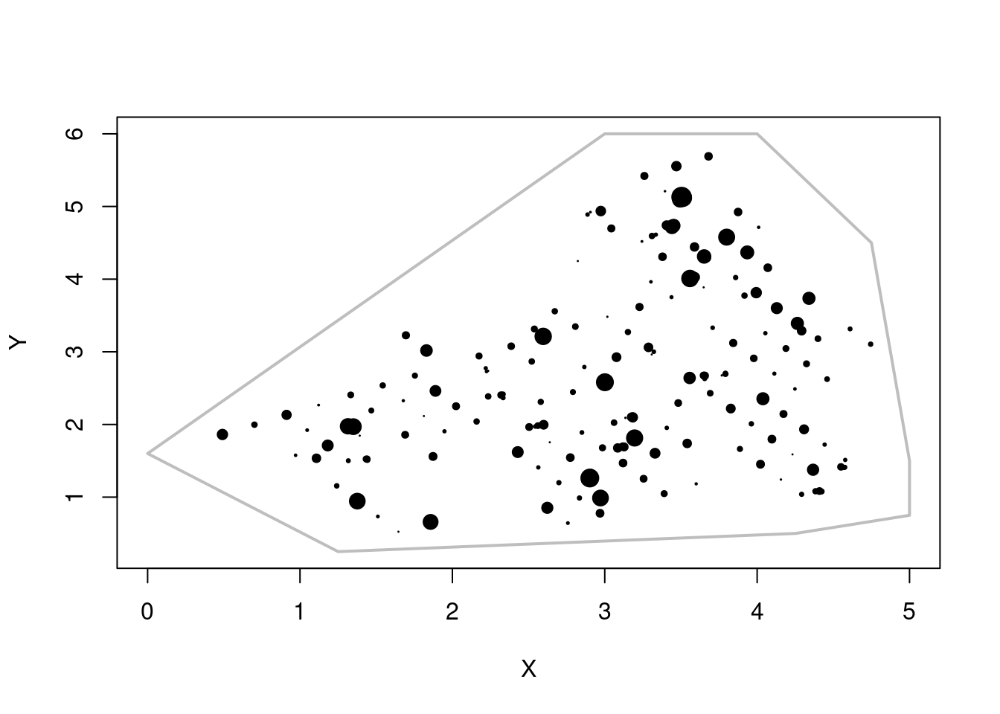
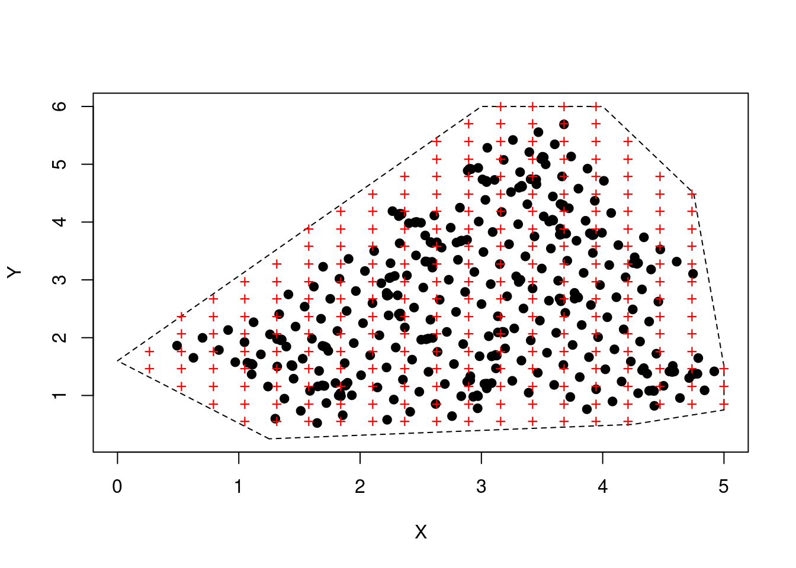

Capítulo 2 Código
2.1 Cabeçalho
No início de todo código aconselhamos a organização tal como declarando o autor do código e a disciplina na qual ele foi elaborado.
## --------------------------
## Prof. Dr. Marcelo Protazio
## Geostatistica PPGME
## --------------------------2.2 Pacotes
A seguir, os pacotes utilizados.
## ------------
## ------------
## [1] Packages
## ------------
## ------------
library(gstat)
library(sp)
library(MASS)
if(!require(spatstat)){install.packages("spatstat")};library(spatstat)## Carregando pacotes exigidos: spatstat## Carregando pacotes exigidos: spatstat.data## Carregando pacotes exigidos: spatstat.geom## spatstat.geom 2.4-0##
## Attaching package: 'spatstat.geom'## The following object is masked from 'package:MASS':
##
## area## Carregando pacotes exigidos: spatstat.random## spatstat.random 2.2-0## Carregando pacotes exigidos: spatstat.core## Carregando pacotes exigidos: nlme## Carregando pacotes exigidos: rpart## spatstat.core 2.4-4##
## Attaching package: 'spatstat.core'## The following object is masked from 'package:gstat':
##
## idw## Carregando pacotes exigidos: spatstat.linnet## spatstat.linnet 2.3-2##
## spatstat 2.3-4 (nickname: 'Watch this space')
## For an introduction to spatstat, type 'beginner'Caso algum pacote não esteja instalado, execute o código
2.3 Leitura dos dados
Aqui, o carregamento dos dados.
## -------------
## -------------
## [2] Read Data
## -------------
## -------------
data(jura)
data = rbind(jura.pred,jura.val)
borda = read.csv('border.csv')2.4 Organização dos dados
## ---------------------
## ---------------------
## [3] Data Organization
## ---------------------
## ---------------------
data = data[,c(1,2,5:13)]
names(data)[1:2] = c('x','y')
rx = range(borda[,1])
ry = range(borda[,2])2.5 Experimento com uma variável
Vamos selecionar o Cádmio (Cd) como variável.
2.5.1 Transformação dos dados
## -------------------------
## -------------------------
## [4] Univariate Experiment
## -------------------------
## -------------------------
## -------------------------
## [4.1] Data Transformation
## -------------------------
id = 5
d1 = d2 = data[,c(1,2,id)]
s1 = shapiro.test(d1$Cd)
l = boxcox(d1$Cd~1,plotit=F)
l = l$x[which.max(l$y)]
d2$Cd = (d1$Cd^l-1)/l
s2 = shapiro.test(d2$Cd)Gráficos de pressupostos do modelo
pdf('zt.pdf',width=6,height=5)
par(mfrow=c(2,2))
hist(d1$Cd,col='gray',xlab=expression(z),main=NULL)
qqnorm(d1$Cd, pch = 19, main=NULL)
qqline(d1$Cd)
hist(d2$Cd,col='gray',xlab=expression(z[t]),main=NULL)
qqnorm(d2$Cd, pch = 19, main=NULL)
qqline(d2$Cd)
dev.off()Figure 2.1: Histogramas e qqplots da variável original na primeiro linha e da variável transformada na segunda linha.
2.6 Visualização dos dados
## ------------------------
## [4.2] Data Visualization
## ------------------------
pdf('mapa.pdf')
plot(borda,lty=1,lwd=2,type='l',col='gray')
points(d1$x,d1$y,pch=19,cex=d2$Cd)
dev.off()Se o código acima funcionar, você terá o seguinte resultado. 
2.7 Estimação espacial
## ------------------------
## [4.3] Spatial Estimation
## ------------------------
nd = 20
coordinates(d1) = ~x+y
coordinates(d2) = ~x+y
xd = seq(rx[1],rx[2],l=nd)
yd = seq(ry[1],ry[2],l=nd)
grid = expand.grid(xd,yd)
ind = which(point.in.polygon(grid[,1],grid[,2],borda[,1],borda[,2])>0)
grid = grid[ind,]2.8 Visualização do grid
## ------------------------
## [4.4] Grid Visualization
## ------------------------
pdf('grid.pdf')
plot(borda,lty=2,type='l')
points(d1,pch=19)
points(grid,pch='+',col='red')
dev.off()
Cross-references make it easier for your readers to find and link to elements in your book.
2.9 Chapters and sub-chapters
There are two steps to cross-reference any heading:
- Label the heading:
# Hello world {#nice-label}.- Leave the label off if you like the automated heading generated based on your heading title: for example,
# Hello world=# Hello world {#hello-world}. - To label an un-numbered heading, use:
# Hello world {-#nice-label}or{# Hello world .unnumbered}.
- Leave the label off if you like the automated heading generated based on your heading title: for example,
- Next, reference the labeled heading anywhere in the text using
\@ref(nice-label); for example, please see Chapter 2.- If you prefer text as the link instead of a numbered reference use: any text you want can go here.
2.10 Captioned figures and tables
Figures and tables with captions can also be cross-referenced from elsewhere in your book using \@ref(fig:chunk-label) and \@ref(tab:chunk-label), respectively.
See Figure 2.2.
par(mar = c(4, 4, .1, .1))
plot(pressure, type = 'b', pch = 19)
Figure 2.2: Here is a nice figure!
Don’t miss Table 2.1.
knitr::kable(
head(pressure, 10), caption = 'Here is a nice table!',
booktabs = TRUE
)| temperature | pressure |
|---|---|
| 0 | 0.0002 |
| 20 | 0.0012 |
| 40 | 0.0060 |
| 60 | 0.0300 |
| 80 | 0.0900 |
| 100 | 0.2700 |
| 120 | 0.7500 |
| 140 | 1.8500 |
| 160 | 4.2000 |
| 180 | 8.8000 |